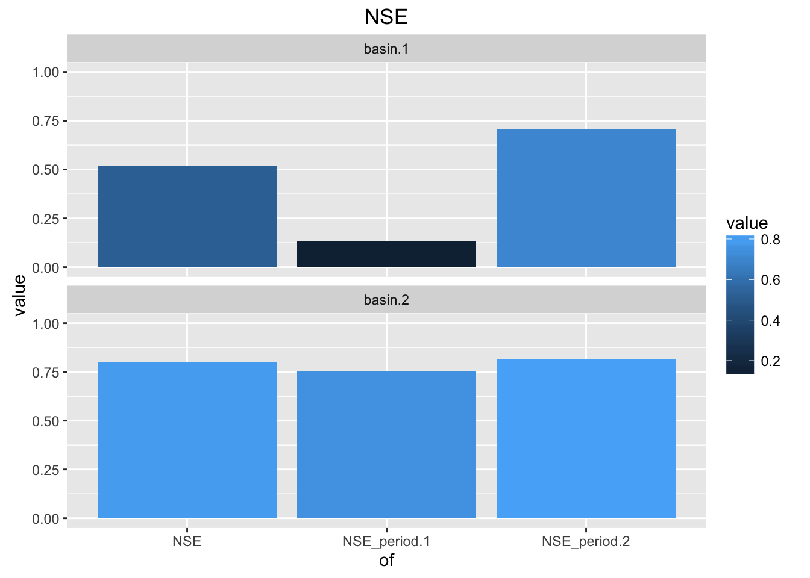

5 Summaries of important objective functions
This chapter explains the code to calculate the main objective functions \(of\) used in visCOS. As explained in respective section objective functions are a pivotal part of model calibration. As of now, visCOS focuses on 4 main objective function: NSE, KGE, Pearson’s Correlation and the Percentage bias (the respective definitions are given here).
The main objective functions for the overall data and the marked periods can be computed through the function main_of_compute. In order to run the function the period have to be marked first, e.g. through the mark_periods function. Additionally, visCOS already provides two different options to create plots for the main objective functions: main_of_rasterplot and main_of_barplot. Both functions create a list with 4 ggplot figures. Each entry in the list corresponds to one of the main objective functions and both lists can be saved to html embedded .jpgs with the serve function.
Examples:
Computing the main objective functions
require(visCOS)
require(magrittr)
of_values <- get_cos_data_example() %>%
mark_periods() %>%
main_of_compute()
of_values## of basin.1 basin.2
## 1 NSE 0.5177309 0.8012919
## 2 KGE 0.7246877 0.7489862
## 3 p_bias 0.3000000 -12.5000000
## 4 CORR 0.8177663 0.9107391
## 5 NSE_period.1 0.1326604 0.7566200
## 6 NSE_period.2 0.7096110 0.8168895
## 7 KGE_period.1 0.4138710 0.8487406
## 8 KGE_period.2 0.8419666 0.6820128
## 9 p_bias_period.1 8.8000000 -8.6000000
## 10 p_bias_period.2 -6.9000000 -15.9000000
## 11 CORR_period.1 0.8243198 0.8806770
## 12 CORR_period.2 0.8577983 0.9385221Plotting the results of main objective function with bar plots:
of_values <- get_cos_data_example() %>%
mark_periods() %>%
main_of_barplot() %>%
extract2(1) %>%
plot()
Plotting the results of main objective function with a raster:
of_values <- get_cos_data_example() %>%
mark_periods() %>%
main_of_rasterplot() %>%
extract2(2) %>%
plot()
5.1 Code
This section defines the code for the main_of-function-family.
# ---------------------------------------------------------------------------
# Code for the Main Objective Functions (main_of)
# authors: Daniel Klotz, Johannes Wesemann, Mathew Herrnegger
# !!!!!!!!!!!!!!!!!!!!!!!!!!!!!!!!!!!!!!!!!!!!!!!!!!!!!!!!!!!!!!!!!!!!!!!!!!!5.1.1 Compute the Main Objective Functions
The purpose of this function is to extract a the main of objective functions from the COSERO data.frame. The objective functions are extracted for each basin separately and computed for the entire length of the data, as well as for each period separately.
The computational part of the function works as follows. In step (I) the non-marked periods of cos_data (columns of viscos_options("name_COSperiod") which are smaller then 0) are excluded from further calculations. The thereby obtained data.frame is named evaluation_data.
# ---------------------------------------------------------------------------
#' Get basic objective function for cos_data
#'
#' Calculate basic objective functions(NSE, KGE, percentage BIAS, Correlation)
#' for every basin and the chosen periods.
#'
#' @param cos_data cos_data data.frame.
#' @return list of basic objective function evaluated for the different
#' hydrological years and over the whole timespan.
#'
#' @import hydroGOF
#' @import dplyr
#'
#' @export
main_of_compute <- function(cos_data) {
# def: ====================================================================
assert_dataframe(cos_data)
name_o <- viscos_options("name_o")
name_s <- viscos_options("name_s")
name_period <- viscos_options("name_COSperiod")
if (!exists(name_period, where = cos_data)) {
stop("Error! Period-Column missing in cos_data, use `mark_periods`")
}
evaluation_data <- cos_data[cos_data[[name_period]] > 0, ]
number_of_basins <- evaluation_data %>%
names() %>%
unique() %>%
grepl(name_o, ., ignore.case = TRUE) %>%
sum()
data_periods <- evaluation_data %>%
magrittr::extract2(name_period) %>%
unique()
number_of_periods <- data_periods %>% length
# compute main-of for entire data: ========================================
o_pick <- dplyr::select(evaluation_data,starts_with(name_o)) %>% unname()
s_pick <- dplyr::select(evaluation_data,starts_with(name_s)) %>% unname()
nse_all <- hydroGOF::NSE(s_pick,o_pick)
kge_all <- hydroGOF::KGE(s_pick,o_pick)
p_bias_all <- hydroGOF::pbias(s_pick,o_pick)
corr_all <- cor(s_pick,o_pick) %>% diag()
# compute periodwise main-of: =============================================
# pre allocations: ########################################################
NSE_period <- matrix(nrow = number_of_periods,
ncol = as.integer(number_of_basins),
data = NA)
KGE_period <- NSE_period
p_bias_period <- NSE_period
CORR_period <- NSE_period
# calculation loop, proabbly slow :( ######################################
for (k in 1:number_of_periods) {
o_pick <- dplyr::filter(evaluation_data,period == data_periods[k]) %>%
dplyr::select(starts_with(name_o)) %>%
unname()
s_pick <- dplyr::filter(evaluation_data,period == data_periods[k]) %>%
dplyr::select(starts_with(name_s)) %>%
unname()
NSE_period[k,1:number_of_basins] <- hydroGOF::NSE(s_pick,o_pick)
KGE_period[k,1:number_of_basins] <- hydroGOF::KGE(s_pick,o_pick)
p_bias_period[k,1:number_of_basins] <- hydroGOF::pbias(s_pick,o_pick)
CORR_period[k,1:number_of_basins] <- cor(s_pick,o_pick) %>% diag(.)
}
# clean up: ===============================================================
obj_names <- c("NSE","KGE","p_bias","CORR",
paste("NSE_period",1:number_of_periods,sep = "."),
paste("KGE_period",1:number_of_periods,sep = "."),
paste("p_bias_period",1:number_of_periods,sep = "."),
paste("CORR_period",1:number_of_periods,sep = ".")
)
obj_fun <- data.frame(of = obj_names,
basin = rbind(nse_all,
kge_all,
p_bias_all,
corr_all,
NSE_period,
KGE_period,
p_bias_period,
CORR_period),
row.names = NULL)
return(obj_fun)
}5.1.2 Plotting
# ---------------------------------------------------------------------------
#' Plot main objective function values
#'
#' Currently two options for plotting the main objectives are provided by
#' visCOS: Plotting the different objective functions values as a set of
#' bar plots \code{barplot_of} and plotting a summary table in form of
#' a large raster of all the objective function values \code{rasterplot_of}.
#'
#' @name plot_main_of
NULL5.1.2.1 Bar Plot
# ---------------------------------------------------------------------------
#' Bar plot for the Main Objective Function Values
#'
#' @rdname of_overview
#' @export
main_of_barplot <- function(cos_data) {
# def: ====================================================================
assert_dataframe(cos_data)
# functions: ==============================================================
assign_ofgroups <- function(of_melted,mof_names) {
of_string <- as.character(of_melted$of)
of_melted$of_group <- of_string %>%
replace(.,startsWith(of_string,mof_names[1]),mof_names[1]) %>%
replace(.,startsWith(of_string,mof_names[2]),mof_names[2]) %>%
replace(.,startsWith(of_string,mof_names[3]),mof_names[3]) %>%
replace(.,startsWith(of_string,mof_names[4]),mof_names[4])
return(of_melted)
}
# plot-list function:
barplot_fun <- function(of_name,of_melted) {
of_to_plot <- of_melted %>% filter( of_group == of_name)
if (of_name == "p_bias") {
gglimits <- c(-viscos_options("of_limits")[2]*100,
viscos_options("of_limits")[2]*100)
} else {
gglimits <- viscos_options("of_limits")
}
plt_out <- ggplot(data = of_to_plot) +
geom_bar(stat = "identity",
position = "identity",
aes(x = of, y = value, fill = value)) +
facet_wrap(~ variable, ncol = 1) +
ggtitle(of_name) +
ylim(gglimits)
return(plt_out)
}
# computations: ===========================================================
mof_names <- c("NSE","KGE","CORR","p_bias")
of <- main_of_compute(cos_data)
num_basins <- ncol(of) - 1
of_melted <- suppressMessages( reshape2::melt(of) ) %>%
assign_ofgroups(.,mof_names)
# plotting ================================================================
plot_list <- lapply(mof_names, function(x) barplot_fun(x,of_melted)) %>%
magrittr::set_names(mof_names)
return(plot_list)
}5.1.2.2 Raster-Plot
#' Bar plot for the Main Objective Function Values
#'
#' @rdname of_overview
#' @import pasta
#' @export
main_of_rasterplot <- function(cos_data) {
mof_names <- c("NSE","KGE","CORR","p_bias")
regex_main_of <- mof_names %.% "*"
assert_dataframe(cos_data)
of <- main_of_compute(cos_data)
#
plot_list <- lapply(regex_main_of,function(x) plot_fun_raster(x,of)) %>%
set_names(mof_names)
return(plot_list)
}
# plot function -------------------------------------------------------------
plot_fun_raster <- function(regex_single_of,of) {
# function definitions ====================================================
extract_single_of <- function(of){
idx <- grep(regex_single_of,of$of)
return(of[idx, ])
}
add_facet_info <- function(of) {
facet_column <- nrow(of) %>%
magrittr::subtract(1) %>%
rep("period",.) %>%
c("overall",.)
return( cbind(of,facets = facet_column) )
}
reverse_basin_levels <- function(prepared_data) {
prepared_data$variable <- factor(prepared_data$variable,
levels = prepared_data$variable %>%
levels() %>%
rev()
)
return(prepared_data)
}
reverse_facetting_levels <- function(prepared_data) {
prepared_data$facets <- factor(prepared_data$facets,
levels = prepared_data$facets %>%
levels() %>%
rev()
)
return(prepared_data)
}
bind_and_round_value <- function(of,gglimits,digits) {
dplyr::mutate(of,
value = pmax(value,gglimits[1]) %>%
pmin(.,gglimits[2]) %>%
round(.,digits)
)
}
# computation =============================================================
if (regex_single_of == "p_bias.*") {
# pbias has different limits :(
gglimits <- c(-viscos_options("of_limits")[2]*100,
viscos_options("of_limits")[2]*100)
} else {
gglimits <- viscos_options("of_limits")
}
#
prepared_data <- of %>%
extract_single_of() %>%
add_facet_info() %>%
reshape2::melt(., id.vars = c("of","facets")) %>%
reverse_basin_levels() %>%
reverse_facetting_levels() %>%
bind_and_round_value(.,gglimits,2)
# ggplot ==================================================================
plt_out <- ggplot(prepared_data,
aes(of,variable, fill = value),
environmnet = environment()) +
geom_raster(position = "identity") +
coord_fixed(ratio = 5) +
facet_grid(~ facets, scales = "free_x", space = "free") +
theme( legend.position = "none") +
geom_tile(color = "white", size = 0.25 ) +
geom_text(aes(of,variable, label = as.character(value,2)),
color = "black")
return(plt_out)
}